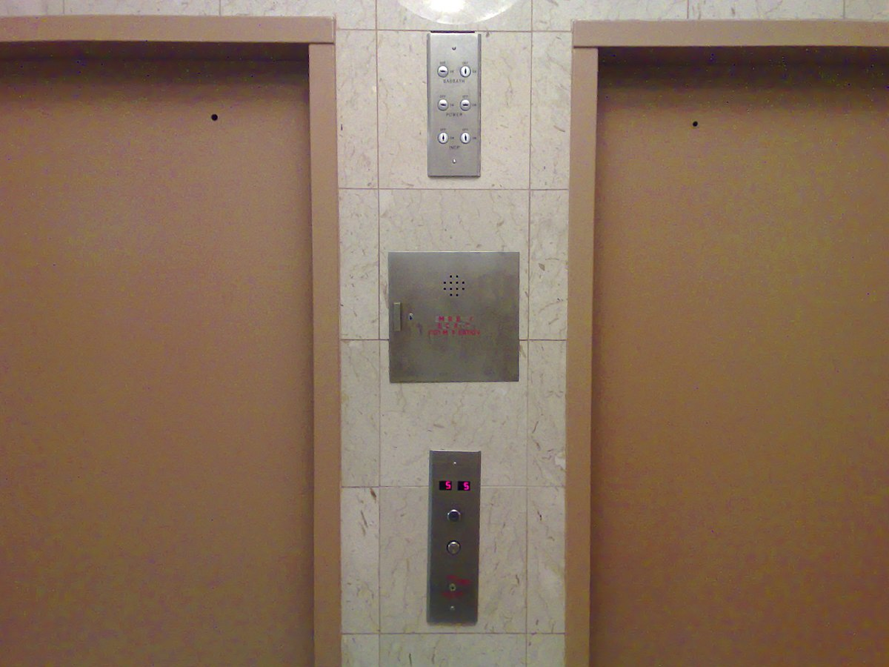

en perspectiva
10 de noviembreSe acercan nuestros tres meses de relación y se han sentido como un corto parpadeo. Tres meses, Dani. Se me ha acostumbrado el cuerpo al verte, aunque siempre me llega aquel momento espontáneo de realización:
Y tal como improbable era que entraras en una relación, lo mismo sucede conmigo. Cada excusa ha ido levantándose desde que nos comprometimos - y para bien. Desde los miedos iniciales de una relación que ambos compartimos (tiempo, compromiso, miedo, ...), a los gajes advertidos (mi previo corto tiempo, tu diferencia de tiempo vacaciones-uni), todo en nuestro destino ha ido en favor a juntar la voluntad del mundo a nuestro cariño - y más agradecido no puedo estar.
Esta última semana nos vimos unos (apróx.) cinco días de siete. Nos hemos visto y abrazado en una semana más veces que en todo el mes pasado, lo que me lleva a pensar en la idea ( un poco D: ) de la abundancia.
¿Seguirá teniendo aquella chispa mi mano que se desliza empalagosa en tu brazo?
Siempre te digo que me gustaría volver a ser nonchalant, y siempre me dices que nunca lo fui. Y en efecto, en ningún segundo lo he sido. Salir conmigo debe costarte mucha energía, pues desde el primer segundo hasta el último de vernos es como si me hubiesen colocado las pilas más potentes en mi espalda - aunque hay ocasiones donde me termine durmiendo hora y media en tu sofá.
Me gustó verte ayer 9 de noviembre en la micro descansando con los ojitos cerrados. Es lindo verte hacer cosas en general, como los uebitos de la mañana que son una maravilla para comer. Una bendición al paladar. Gracias.
Muchas gracias por haberme invitado a tu vida.
Dejando la cursilería a un lado, mi memoria me falló en el momento pero sí sabía que había leído cuestiones al respecto de lo que no pude explicarte: loopholes en el judaísmo, y extrañas prácticas. Empezando por...
Ascensores sabbat
¿Y qué es el "sabbat", para empezar?
El sabbat es un día especial observado en el judaísmo desde la noche del viernes hasta la noche del día siguiente, en el cual según la Torá, se celebra el día a través de abstenerse de ejercer cualquier clase de trabajo - una ley muy comunista, a mi parecer.
Como detalle extra, me acabo de dar cuenta que de acá se origina el "año sabático". Sabático, característico de "sabbat", en el cual se descansa y no se ejerce trabajo o estudio alguno. Hmmm.
Me gustaría incluir igual la similitud del sabbat judío con el jumu'ah islámico - ambos días especiales en las dos religiones que comienzan el viernes de frecuencia semanal - la diferencia está en que el judío tiene más restricciones que el islámico, pues en el jumu'ah ("jummah", "ٱلْجُمُعَة") es más una oración comunitaria, obligación de reunirse en la mezquita, y en el judaísmo al parecer buscan excusas para no trabajar. Mentira. Pero sí cae de sorpresa, pues este día viene con una cantidad extensa de reglas, como:
- plantar, arar, cosechar
- apagar o prender fuego
- amasar, hornear (de acá se puede derivar a cocinar, freír, ...)
- trasquilar, lavar, batir, pintar, hilar, tejer lana
- atrapar, matar, despellejar a un animal
- escribir o borrar dos o más letras
- construir o demoler (se deriva a no poder romper comfort cuando hacen popó)
- transportar un objeto de áreas públicas a áreas privadas y viceversa
En fin, un montón. Con la llegada de la electricidad, el sabbat incluye operar equipamiento eléctrico, lo cual incluyen los ascensores y teléfonos, pues 1. completan un circuito eléctrico y 2. puede llevar indirectamente a "escribir" el nuevo número de piso en la pantalla, o texto en el teléfono. Entonces te puedes imaginar cómo es el ascensor sabático: se detiene en todos los pisos automáticamente y no requieren intervención humana (como presionar botones). Pensando, yo no podría ser judío, pues la compulsión me llevaría a enloquecer: si en tu voluntad se enceuntra expectante que el ascensor se mueva cuando tú estés en él, ¿qué diferencia hacen tus pies y el dedo que presiona el botón? Ay, no. Dama, yo antes por una falla ortográfica reseteaba mi teléfono. Por escribir mal una letra o un comando mientras instalaba un sistema operativo en mi computadora, lo empezaba todo de nuevo. Créeme, tengo experiencia en hacer gimnasia mental. No podría, soy demasiado consciente. Muy tonto.
Pero el loophole que más tengo en mente es el kapparot. Y sí, tuve que buscar su nombre en Google, tienes razón con que en persona no puedo sacar mi teléfono y ponerme a buscar las cosas. El kapparot (כפרות) es un ritual judío de expiación cuya palabra significa "cubrir", refiriéndose a cubrir o borrar los pecados en cuestión, y su práctica se realiza el día del Yom Kippour, el Día de la expiación/perdón. Su práctica se puede realizar de dos formas, la primera siendo la principal:
-
Un pollo, gallo, o gallina es balanceado por encima de la cabeza de la persona mientras aún está vivo el animal, mientras se recita lo siguiente:
"Este es mi intercambio, este es mi sustituto, esta es mi expiación. Este gallo (gallina) irá a su muerte, mientras que yo entraré y procederé a una buena y larga vida y a la paz."
Posteriormente, el animal es sacrificado y se entrega a caridad.
-
Una bolsa de dinero es girada alrededor de la cabeza de la persona, y se recita de manera similar lo siguiente:
"Este es mi cambio, este es mi sustituto, esta es mi expiación. Este dinero irá a la caridad, mientras que yo entraré y procederé a una buena y larga vida y a la paz."
Luego el dinero es entregado a caridad.
Esta práctica es hecha por un porcentaje de los judíos que practican el judaísmo, pues la mitad de los judíos consideran que la religión no es muy importante para ellos, afirmando lo judío más como identidad que práctica de religión. No es ni un cuarto de honorable que el ramadán islámico o la cuaresma cristiana, según opiniones personales. Y siento rechazo, pues ya sabes cómo debe ser usado.

En fin, me he alejado mucho de la religión y me he arraigado más al mundo tangible. Desconozco si llamarme laico, pues hoy once de noviembre te conté que tuve lo que indica ser el inicio de un sueño lúcido, y a eso de las dos de la mañana me encontraba en complicación de moverme, y empecé a escuchar ruidos que no podía distinguir de la vida real y mi cabeza: una radio que no se detenía, ruidos de balas, un serrucho cortando, logré ver luces, y al final una figura larga y ofuscada al frente de mi cama la cual terminó congelándome y no pude hacer mucho sino profesar:
لا إله إلا الله
la ilaha illa Allah
No hay otra deidad que Dios
Es la frase principal del testimonio de fe islámico, shahada (ٱلشَّهَادَة), y declara la unidad
(descartando la trinidad cristiana) de Dios como sola divinidad y es el primer pilar del Islam,
tawhid (تَوْحِيدُ), monoteísmo puro.
Así que laico hasta que necesite a Dios a las dos de la mañana en desesperación de ver cómo se asoma lo
oscuro no suena adecuado en mis compulsivos estándares consistentes.
Laico hasta que sienta el peso de
lo que debería haber sido aislado en el infierno, observándome desde nuestro propio mundo terrenal. ¿Qué
seré
yo entonces, sino un indeciso?
Se me había pasado lo mucho que me gusta escribirte, pues sabes que mi mente es igual a aquella radio que no pude apagar en la madrugada: no se detiene, por más que quiera. Aquí es el mundo donde puedo derrocharte mil y una palabras y tú con gusto me leerás, extraña ha sido mi ausencia por un buen tiempo de no comunicarme contigo por este medio. Hay que reconocer igual nuestra nueva mayor frecuencia de vernos, que nos ha otorgado nuevas experiencias, de lo cual mil veces agradecido estoy, pero es tiempo de observar sobre ellas y apreciarnos ahora en la distancia: mi escribir, tu carga académica... que todo nos haga crecer, y que nuestro próximo abrazo lo embelese la nostalgia y el cariño.
Con mucho afecto,
tu novio.